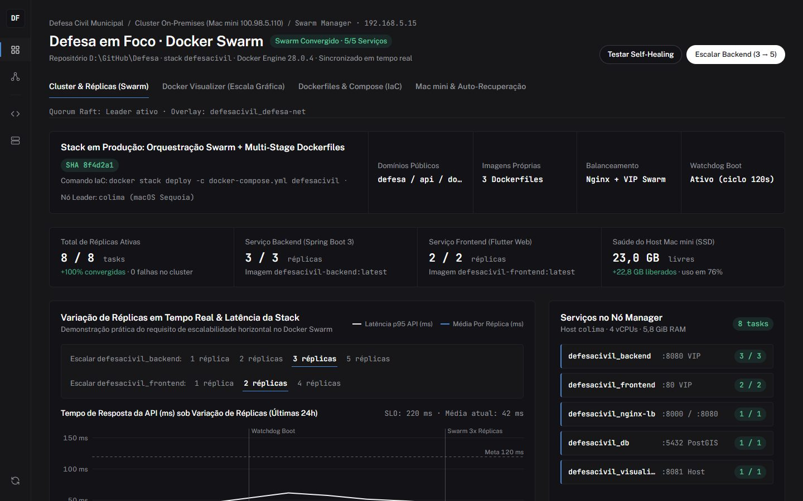

Implementação prática de Dockerfiles Multi-Stage, Orquestração Declarativa via Docker Compose, Variação Dinâmica de Réplicas e Monitoramento Gráficos com Docker Visualizer baseados na obra "Descomplicando o Docker".
Plataforma SaaS para prefeituras e órgãos de Defesa Civil gerenciarem áreas de risco, ocorrências georreferenciadas, vistorias técnicas, sensores IoT hidrológicos e emissão de alertas de emergência.
| Camada | Tecnologia | Papel no Sistema |
|---|---|---|
| Frontend Web/App | Flutter 3 + Nginx | Painel de Comando, Mapa Interativo e PWA Mobile |
| Backend API | Spring Boot 3 (Java 17) | Regras de negócio, JWT, IA Gemini, Stripe, Alertas |
| Banco Geoespacial | PostgreSQL 15 + PostGIS | Polígonos de zonas de risco, coordenadas e ocorrências |
| Reverse Proxy / LB | Nginx Alpine + IPVS | Balanceamento de carga entre réplicas Web e API |
| Observabilidade | Docker Visualizer | Inspeção gráfica de nós e containers do cluster Swarm |
Construção de imagens customizadas seguindo as boas práticas do livro "Descomplicando o Docker": camadas enxutas, inicialização determinística e verificação nativa de saúde (HEALTHCHECK).
docker/postgres/Dockerfile)
defesacivil-db:latest
FROM postgis/postgis:15-3.3
LABEL maintainer="Defesa em Foco <contato@rhprogramer.com.br>"
LABEL description="Banco PostgreSQL 15 com extensão geoespacial PostGIS 3.3"
# Script executado automaticamente no primeiro boot do volume
COPY init-postgis.sql /docker-entrypoint-initdb.d/01-init-postgis.sql
EXPOSE 5432
# Garante ao Docker Swarm que o SGBD está pronto para conexões
HEALTHCHECK --interval=10s --timeout=5s --retries=5 \
CMD pg_isready -U ${POSTGRES_USER:-defesa_user} \
-d ${POSTGRES_DB:-defesa_civil} || exit 1
init-postgis.sql ativa automaticamente as extensões postgis e postgis_topology ao inicializar o container, permitindo consultas espaciais de raio e polígonos de inundação.HEALTHCHECK, o Docker considera o container pronto assim que o processo inicia, mesmo antes do PostgreSQL aceitar conexões TCP. Com o pg_isready, o Swarm só roteia tráfego quando o banco está 100% operacional.postgres_data:/var/lib/postgresql/data no nó Manager, preservando registros mesmo em atualizações da imagem.
Uso de múltiplos estágios (FROM ... AS build) para compilar o código-fonte em imagens completas de SDK e copiar apenas o artefato final para imagens Alpine mínimas e seguras.
defesa-backend/Dockerfile)
defesacivil-backend:latest
# Estágio 1: Compilação Maven com JDK 17 Completo FROM maven:3.9.6-eclipse-temurin-17-alpine AS build WORKDIR /app COPY pom.xml . RUN mvn dependency:go-offline -B COPY src ./src RUN mvn clean package -DskipTests -B # Estágio 2: Imagem Final Enxuta (Apenas JRE 17 Alpine) FROM eclipse-temurin:17-jre-alpine WORKDIR /app RUN apk add --no-cache curl COPY --from=build /app/target/*.jar app.jar EXPOSE 8080 ENTRYPOINT ["java", "-jar", "app.jar"]
Resultado: Redução de 780 MB (Maven + JDK + cache) para 185 MB na imagem final de produção.
Dockerfile.flutter)
defesacivil-frontend:latest
# Estágio 1: Compilação do SDK Flutter para Web
FROM ghcr.io/cirruslabs/flutter:stable AS build
WORKDIR /app
COPY pubspec.* ./
RUN flutter pub get
COPY . .
RUN flutter build web --release --no-tree-shake-icons \
--dart-define=API_URL=https://api.rhprogramer.com.br
# Estágio 2: Servidor Web Nginx Alpine Ultra-Leve
FROM nginx:alpine
COPY --from=build /app/build/web /usr/share/nginx/html
COPY nginx/flutter.conf /etc/nginx/conf.d/default.conf
EXPOSE 80
Resultado: Redução de 3,2 GB (SDK Flutter + Dart + Android tools) para apenas 42 MB no container Nginx Alpine!
O Docker Swarm transforma motores Docker isolados em um único cluster virtual gerenciado por consenso Raft, rede Overlay criptografada e balanceamento de carga nativo por IPVS.
setup-swarm-mac.sh)
Ativo no Mac mini
No servidor físico Mac mini (100.98.5.110), o cluster roda sobre uma Máquina Virtual Linux (Colima / Apple Virtualization.framework) dedicada com 4 vCPUs e 5,8 GiB de RAM:
$ docker swarm init --advertise-addr 192.168.5.15 Swarm initialized: current node (z4x9k...) is now a manager. $ docker node ls ID HOSTNAME STATUS AVAILABILITY MANAGER STATUS z4x9k8m1p2 * colima Ready Active Leader
defesacivil_defesa-net): Cria uma sub-rede virtual isolada (10.0.1.0/24) onde os containers se descobrem automaticamente por DNS (http://backend:8080).setup-swarm-dind.ps1)
1 Manager + 2 Workers
Para simular múltiplos servidores físicos em laboratório sem custo de várias VMs pesadas, implementamos também o provisionamento via Docker-in-Docker (docker:dind):
# Cria 3 nós independentes rodando daemons Docker isolados docker run -d --privileged --name swarm-manager docker:dind docker run -d --privileged --name swarm-worker-1 docker:dind docker run -d --privileged --name swarm-worker-2 docker:dind # Inicializa o Manager e ingressa os Workers via Token docker exec swarm-manager docker swarm init docker exec swarm-worker-1 docker swarm join --token SWMTKN-1-... docker exec swarm-worker-2 docker swarm join --token SWMTKN-1-...
swarm-manager, swarm-worker-1 e swarm-worker-2.docker-compose.ymlToda a arquitetura do sistema — serviços, número inicial de réplicas, políticas de reinício, janelas de atualização sem downtime e redes overlay — é declarada em código e implantada com um único comando.
docker-compose.yml
docker stack deploy
services:
backend:
image: defesacivil-backend:latest
networks: [defesa-net]
deploy:
mode: replicated
replicas: 3
update_config:
parallelism: 1
delay: 10s
order: start-first
restart_policy:
condition: on-failure
delay: 5s
frontend:
image: defesacivil-frontend:latest
networks: [defesa-net]
deploy:
mode: replicated
replicas: 2
visualizer:
image: dockersamples/visualizer:stable
ports:
- target: 8080
published: 8081
mode: host
volumes:
- /var/run/docker.sock:/var/run/docker.sock:ro
docker stack deploy -c docker-compose.yml defesacivil cria automaticamente a rede overlay, os volumes e as 8 tasks distribuídas em 5 serviços.order: start-first): Ao atualizar a versão do Backend, o Swarm sobe primeiro a réplica nova, aguarda o healthcheck passar e só então desliga a réplica antiga (1 por vez a cada 10s), garantindo zero queda para os usuários.constraints: [node.role == manager] para garantir acesso consistente ao volume de dados e ao socket do Docker.:8000 e :8080) e Visualizer (:8081), garantindo compatibilidade direta com a VM Colima e com o Cloudflare Tunnel.
Demonstração real de escala elástica horizontal (scale up e scale down) dos microsserviços Backend e Frontend sem interrupção das requisições ativas.
# Estado Inicial Declarado no Compose: # defesacivil_backend = 3 réplicas | defesacivil_frontend = 2 réplicas $ docker service scale defesacivil_backend=5 defesacivil_backend scaled to 5 overall progress: 5 out of 5 tasks 1/5: running [==================================================>] 2/5: running [==================================================>] 3/5: running [==================================================>] 4/5: running [==================================================>] 5/5: running [==================================================>] verify: Service defesacivil_backend converged $ docker service scale defesacivil_frontend=4 defesacivil_frontend scaled to 4 verify: Service defesacivil_frontend converged
defesacivil_backend recebe um IP virtual único na rede overlay. Quando escalamos de 3 para 5 réplicas, o IPVS do kernel Linux atualiza a tabela de balanceamento instantaneamente.defesacivil_nginx-lb utiliza o DNS interno do Docker (resolver 127.0.0.11 valid=5s), descobrindo automaticamente as novas réplicas (backend.4 e backend.5) em até 5 segundos.
Utilização da imagem oficial dockersamples/visualizer:stable (conforme livro "Descomplicando o Docker") integrada ao Portal de Controle em tempo real publicado em https://docker.rhprogramer.com.br.

dockersamples/visualizer:stable: Conecta-se ao socket /var/run/docker.sock em modo somente-leitura e desenha graficamente cada nó do cluster e cada container alocado nele.docker.rhprogramer.com.br): Desenvolvido especificamente para esta apresentação, une o container oficial do Docker Visualizer a botões interativos que executam docker service scale no servidor Mac mini em tempo real.Garantia de continuidade de negócio em dois níveis: recuperação automática de containers com falha pelo Docker Swarm e religamento autônomo do servidor físico após queda de energia.
< 2s)
Reconciliation Loop
O Manager do Swarm monitora continuamente o estado das tasks. Se um container do Backend trava ou é encerrado abruptamente:
# Simulando falha abrupta em uma réplica de produção: $ docker rm -f $(docker ps -q --filter name=defesacivil_backend | head -n 1) 817d69951c25 # O Swarm detecta 2/3 réplicas e instancia uma nova task na hora: $ docker service ps defesacivil_backend NAME NODE DESIRED CURRENT STATE defesacivil_backend.1 colima Running Running 3 seconds ago \_ defesacivil_backend.1 colima Shutdown Failed 5 seconds ago defesacivil_backend.2 colima Running Running 35 minutes ago defesacivil_backend.3 colima Running Running 35 minutes ago
watchdog-defesa.sh)
Ciclo de 120s
pmset autorestart 1): Se faltar luz no Mac mini, assim que a energia volta a placa-mãe liga sozinha e realiza auto-login no macOS.com.defesacivil.watchdog: Executado no boot e a cada 2 minutos pelo launchd:
defesacivil;
:9000), o Portal Docker (:8090) e o túnel Cloudflare ativos.Todos os requisitos acadêmicos e técnicos propostos foram implementados e validados em ambiente real de produção.
| Funcionalidade Esperada | Implementação no Projeto | Status |
|---|---|---|
| 1. Criação de Dockerfiles | 3 Dockerfiles próprios (PostGIS, Spring Boot Multi-Stage, Flutter Web Multi-Stage) |
OK |
| 2. Docker Swarm (VMs / DinD) | Cluster Swarm ativo em VM Linux (Colima no Mac mini) + Script Multi-Nó docker:dind |
OK |
| 3. Docker Compose (IaC) | Stack completa em docker-compose.yml com redes overlay, volumes, healthchecks e rolling update |
OK |
| 4. Variação de Réplicas | Escala horizontal ao vivo (backend 1x/3x/5x e frontend 1x/2x/4x) com balanceamento Nginx |
OK |
| 5. Docker Visualizer | Container dockersamples/visualizer:stable + Portal interativo em docker.rhprogramer.com.br |
OK |
https://docker.rhprogramer.com.br (senha 1207) e mostrar as 8 tasks ativas lidas em tempo real do Mac mini.dockersamples/visualizer.